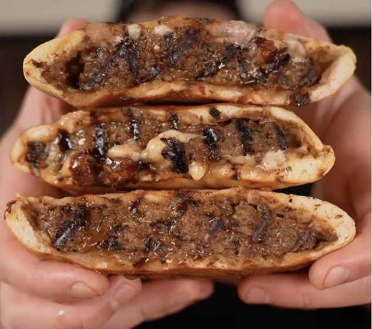

Arayes

Description
Arayes are a typical street food in the Middle East that are stuffed with minced meat. They are kid-friendly and delicious.
Ingredients
- 1 Yellow onion
- 1 Jalapeno
- 2 Garlic cloves
- 500g Ground beef
- Cilantro leaves
- 1 Tbsp paprika
- 1 tsp ground cumin
- 1/4 tsp allspice
- 1/4 tsp coriander
- 1/2 tsp onion powder
- 1/2 tsp garlic powder
- 1/2 tsp salt
- 1/2 tsp ground black pepper
- 4 thick pita breads
- 1/4 cup olive oil
Steps
- Using a box grater, grate the whole onion into fine shreds. Gather up with shredded onion into several paper towels or a clean kitchen towel and squeeze as much moisture as you can out of it. Place the onion onto a cutting board and put the chopped jalapeno, cilantro and grated garlic on top, then run your knife through the mixture several times so everything is finely chopped and cohesive.
- Add the onion mixture to a large mixture bowl along with the ground beef, paprika, cumin, allspice, coriander, onion powder, garlic powder, salt and black pepper. Using your hands or a spatula, stir this mixture together until all the spices are nicely mixed in and everything is incorporated evenly.
- Slice the pita bread in half then carefully open up the pocket of the bread and stuff with about ⅓-½ cup of the beef mixture, you don’t want it to be so full the bread breaks but enough to fill all the pocket up to the top. Repeat with all the filling so you have several pockets.
- Heat a grill pan over medium high until nearly smoking. Brush the arayes on both sides with good quality olive oil and then place onto the grill pan. Cook for 4-5 minutes until the outside of the pita is nicely charred and toasted and the beef is cooking inside, then flip and cook another 4-5 minutes on the other side. Remove from the pan, repeat the cooking process for all the arayes and serve immediately with your favorite sauce.